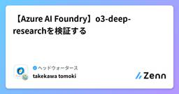

ヘッドウォータースのフィード
https://zenn.dev/p/headwaters
株式会社ヘッドウォータースのテックブログです。 AIエージェント、生成AI、LLM、Azureのサービスや資格、IoT、XR系などData&AIとApp modernizeに関して幅広く投稿します！
フィード

零れ落ちるすべてを拾うと言うか、欲深きことよ... ー ならば継続か離脱か、データの深淵に眠るChurnの徴を読み解くがいい
ヘッドウォータースのフィード
タイトルの世界観だけ間違っていますが、中身は真面目に書いていますのでご安心ください。「最近、弊社サービスの利用者が減ってる気がする…」新規顧客の獲得に力を入れる企業は多いですが、実は既存顧客が離れていく理由を知ることこそ、ビジネスを安定して成長させるカギです。そこで登場するのが Churn（離脱）解析。Churnは離脱という意味です。つまり顧客離脱予測というとわかりやすいかもしれません。「どんな人が、どんなタイミングで、なぜ離れてしまうのか？」をデータから読み解くことで、予防策を打ったり、サービス改善のヒントを得たりできます。現代のビジネスにおいて重要なのが「顧客の維持」です。...
1日前

【Durable Functions】Python で動かしてみて概要を理解する
ヘッドウォータースのフィード
はじめに以前から気になっていた Durable Functions を概要から理解したいです。C# で開発することが定番だと思いますが、筆者は Python をよく使うので、Python 版で理解していきます。 ターゲットDurable Functions で何ができるかあまりよくわからない方Durable Functions を Python で使ってみたい方 Durable Functions 概要Azure Functions の拡張機能であり、長時間実行するような、ワークフロー実装に最適な機能です。https://learn.microsoft.com...
3日前

MacbookからLinux OSのAzure VMにリモートデスクトップでアクセスする方法
ヘッドウォータースのフィード
Windows OSのAzure VMだとリモートデスクトップがデフォルトで出来ますが、Linux OSは設定が必要だったんで紹介 前提ホストPC ... Macbook(Appleチップ)仮想マシン... Azure Virtual Machine(LinuxOS) 方法 1. Azure VM側の設定Azure Portalにアクセスし、VMを起動。作成したAzure VMリソースのネットワーク設定をクリックポートルールの作成から受信ポートルールをクリックサービスはRDPを選択し、宛先ポート範囲に3389を入力する。MacbookのTermina...
5日前

【Copilot studio】- Bring Your Own Modelの設定手順
ヘッドウォータースのフィード
執筆日2025/7/7 Bring Your Own Modelとは？Microsoft Build 2025で発表されたBring Your Own Model。Azure AI Foundry上のモデルをCopilot studioでも使えるようにできる仕組みです。 前提Copilot studioでエージェントを作成済みであることAzure AI Foundryでモデルをデプロイ済みであること 手順ツール>+ツールを追加するをクリックするプロンプト>+新しいツールをクリックするプロンプトをクリックするモデル&g...
5日前

【Copilot studio】- Outlook MCPサーバーを試す
ヘッドウォータースのフィード
執筆日2025/07/07 検証内容Copilot studioに登場した、OutlookのMCPサーバー。何ができるか気になったので検証する。 Outlook MCPサーバーとは？以下の３つが登場しました。Contact Management MCP ServerEmail Management MCP ServerMeeting Management MCP Server Contact Management MCP Server連絡先の操作ができるMCPサーバツール名説明GetContactFolders連絡先フォルダを...
5日前

Copilot Notebookを使えば「1業務1RAG」が実現できるのでは？ 1
1
ヘッドウォータースのフィード
1. 2025年6月に登場したCopilot NotebookCopilot Notebook は、2025年6月にMicrosoftからリリースされた長文かつ構造的に対話できる新しいAIチャットです。Microsoft 365 Copilotの1機能として組み込まれているのですが、従来のCopilotチャットでは難しかった以下のことが可能となっています。過去のチャット履歴を一貫して参照する参照する資料を随時選択・追加できる複数資料を同時に参照できる返信方法を指示できるhttps://techcommunity.microsoft.com/blog/micro...
6日前

【Azure AI Foundry】o3-deep-researchを検証する
ヘッドウォータースのフィード
執筆日2025/7/5 o3-deep-researchとは？Azure AI Foundry Agent Serviceにおいて提供される、マルチステップWebリサーチ特化のAIモデルです。Azure OpenAIのモデルをベースにFine-tuningされており、Grounding with Bing Search を用いてリアルタイムなWeb情報を収集・分析・要約し、出典付きの網羅的なレポートを生成します。 サポートしているリージョンWest USNorway East※2025年7月時点での対応リージョン SDKPython SDK：利用...
7日前

量子コンピューティングことはじめ
ヘッドウォータースのフィード
概要量子コンピューティングを行う上での基礎的な内容をまとめてみました。 アダマールゲート（Hadamard Gate）単一量子ビットを重ね合わせ状態に変換行列表現：例： グローバーのアルゴリズム（Grover's Algorithm）目的：最小回数で正解を見つける探索アルゴリズム（O(√N)）流れ：アダマールで全状態を重ね合わせオラクルで正解の符号を反転拡散演算（反転増幅）測定Python（Qiskit）での例あり CNOTゲートとSWAPゲート 🔹 CNOT（制御NOT）制御ビットが1のときだけターゲ...
8日前

Prophet 第２回 天の下のすべてのことには時がある
ヘッドウォータースのフィード
タイトルはユダヤのコヘレトの書からの引用です。観測されるものは目に見えますが、その裏側に流れている法則や因果は目に見えません。でも人は見えない法則を信じているのです。分析というのは、データの裏側にある法則を見つけ出す作業とも言えます。時系列予測アルゴリズムProphetの使い方解説２回目です。私たちは業務で時系列予測をおこなうシステムを開発していますが、特に売上予測をする際には曜日や祝日、近隣のイベントなど様々な外部要因が影響する場合があります。今日は外部変数の取り扱いについて紹介します。前回Prophetアルゴリズムを紹介したようにProphetでは年単位や月、週単...
8日前
Azure AI Agent x Grounding with Bing Search を試してみる
ヘッドウォータースのフィード
執筆日2025/07/03 概要2025年8月にBing Search APIが完全廃止されることが決まり、AzureでのBing Search利用は、Grounding with Bing Search（及びGrounding with Bing Custom Search）のみになります。そこで今回はこれらをAzure AI FoundryのAgentプレイグラウンドで使ってみたので、ご紹介します。 リソース準備Azure AI Foundryのリソースは既にある前提で進めさせていただきます。Azure PortalでBingリソースで検索するとこのように作成する...
9日前
SQLだけで半年先の人口を予測してみる
ヘッドウォータースのフィード
出力イメージDatabricksには 簡単なSQLだけで時系列予測ができるai_forecast() 関数 があります。この関数を使用して、以下を予測してみます。対象：東京都中央区(地域コード13102)の人口学習期間：2021年1月～2025年1月予測期間：2025年2月～2025年7月（2025年5月まで実測値もあり）このテーブルを元に、こんな感じ。X軸：年月Y軸：人口実線：実測値（2025年5月まで）点線：予測（population_forecast）青枠：予測上方（population_upper）と下方（population_lower）...
12日前
MCPサーバーをSSE経由でエージェントと接続する
ヘッドウォータースのフィード
執筆日2025/06/30 概要先日FastAPIを使ってMCPサーバーを立て、OpenAIのAgent SDKと接続する方法について解説するブログを書きました。https://zenn.dev/headwaters/articles/8d9a3e56ad4e1cこちらの記事ではmcp.run(transport="stdio")を使って標準入出力形式でMCPサーバーを起動するコードを書いたため、以下のようにMCPサーバーをサブプロセスを使ったコマンド実行で呼び出してエージェントに渡す必要がありました。<前略>params = MCPServerStdio...
12日前
AI-102取得から1年経ったので更新試験を受けた
ヘッドウォータースのフィード
執筆日2025/06/30 概要AI-102: Azure AI Engineer Associateを取得して一年が経過したため、更新が必要になりました。取得時の記事はこちらhttps://zenn.dev/headwaters/articles/f543ca3dccb43eAzureの認定資格で900番台を除く中級以上の資格は1年ごとに知識の最新化が出来ているかを問われる更新試験を受けなければなりません。(資格期限切れの半年前から更新試験を受けることができます) 内容 受験方法資格取得の時のようにお金を払って試験会場に行ったり、部屋の中をクリーンにしてカメ...
12日前
🧠 AI-900受験体験記：AI初心者がCopilotと一緒に基礎から学んで合格するまで
ヘッドウォータースのフィード
はじめに：AI案件に参画して気づいた「基礎の大切さ」こんにちは！ヘッドウォータースコンサルティングのちみです！最近、AIエンジニアの方との日々のミーティングでAIに関する専門用語や考え方が飛び交い、「なんとなくわかるけど、ちゃんと説明できない…」という場面が増えてきました。そんな中で、「AIの基礎を体系的に学び直したい」と強く感じるようになり、MicrosoftのAI-900（Azure AI Fundamentals）を受験することを決意しました。この資格は、AIの基本的な概念からAzure上での活用方法までを網羅しており、初心者でも取り組みやすい内容になっています。この...
12日前
signate: 初心者が2013年の4大テニストーナメントの試合詳細情報から、試合の結果を予測するモデルを作成
ヘッドウォータースのフィード
目的前回のタイタニック二値分類に引き続き、二値分類問題をもう一度やることで知識を定着させる。また、精度改善にも取り組む。前回はコードが見にくくなってしまったので、クラスを使ってみる。 コンペ概要今回参加したコンペhttps://signate.jp/competitions/118データ概要課題種別：分類データ種別：多変量学習データサンプル数：471説明変数の数：45欠損値：あり まずは提出パート 仮説立案 特徴量の説明No.カラム名データ型説明0idintインデックスとして使用1Tournam...
12日前
文系・非エンジニアのための基礎理論 |【ゼロから分かるAI百科】#1：ファインチューニング
ヘッドウォータースのフィード
前書き：このシリーズについて「文系・非エンジニアのための基礎理論」では、“知らなくても分かる”をコンセプトに、専門知識が無くても技術的な話をそこそこ深く理解できるような記事を作成していきます。このシリーズでは以下のことをお約束します！事前に押さえておくべき知識があれば冒頭でご紹介します非日常的な英単語や専門用語、義務教育に登場しない数学記号は注釈無しに使いません こんな方に是非！会議などで技術的な話になるとついていけない専門書を読むと英単語や専門用語や数式がハードルになるとにかく簡単に知りたいけど、あまり浅い理解では満足できない この記事のまとめファ...
12日前
Human-in-the-Loopが必要な理由 - 進化する生成AIと残る6つの課題
ヘッドウォータースのフィード
Reasoning Modelと新たなスケーリング則がもたらす生成AIの進化の可能性（ELYZA社内勉強会）https://note.com/elyza/n/n5aa5486567b5この記事が面白かったのと、Ascii x Microsoft主催のAI Challenge Dayの評価方法から今後の生成AIの実務利用について、考えてみたいと思います。上記の記事からは、生成AIに大量の検索をさせることで人を超えられるという歴史的な背景があるところが面白いなと思いました。確かに最終的に人が判断するより、大量の検索対象データから正解を導き出した方が人より良い判断ができるような気がし...
12日前
Foundry Localをさわってみた
ヘッドウォータースのフィード
きっかけ公開されてから1か月たちますが、WindowsのローカルPCでカンタンにエッジAIを動かせられるとのことで、興味がでたのでさわってみました。 インストール方法PowerShellで以下を実行するだけwinget install Microsoft.FoundryLocal アーキテクチャFoundry Local サービスの特徴として、推論エンジンを操作するための標準インターフェイスを提供する OpenAI 互換の REST サーバーが含まれており、 Foundry Local SDKを使用してアプリケーションと連携させたり、HTTP経由でモデルを実行するこ...
15日前
ITの世界でオフチョベットしたテフに遭遇した時の対処法
ヘッドウォータースのフィード
はじめに「オフチョベットしたテフをマブガッドしてリットにしておいて！」おふちょ…？IT関連のサービスに携わる中では、こんな瞬間が何度もあります。横文字・略語・技術用語・業界独特の言い回し、その単語の意味がわからないだけで、思考が止まり会話に入れなかったこと、みなさんも新人の頃はご経験ないでしょうか。本記事では“オフチョベットしたテフ”のような用語に出会ったとき、どう考え、どう行動すべきかを主観で書いてみます。 1. わからないを自覚する❓「まぁ文脈的にテフってなんかの原材料のことじゃない？」❓「リットはなんか聞いたことあるし、一旦問題ないだろう」最初からあ...
16日前
Microsoft Docs MCP Serverを活用したCopilot Studioエージェントの作成手順
ヘッドウォータースのフィード
執筆日2025/6/26 やることCopilot Studioのカスタムコネクタを使ってMicrosoft DocsのMCPサーバーに接続します。それを情報源とするエージェントをCopilot Studioで開発します。 用意するものYAMLswagger: '2.0'info: title: MCP Server for Microsoft Docs description: Microsoft DocsのMCPサーバーです。 version: 1.0.0host: learn.microsoft.combasePath: /apischem...
16日前